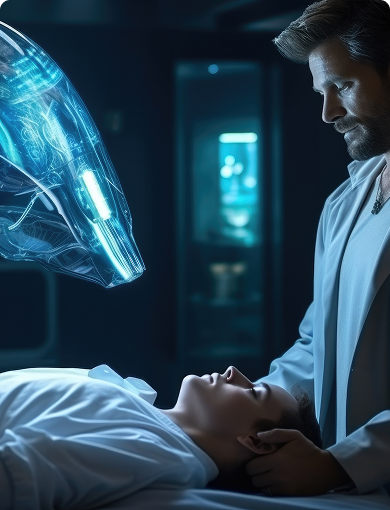

Why Choose Hospitals in Electronic City?
Electronic City is not just an IT hub — it’s also a growing center for advanced healthcare. The region offers:

Easy accessibility:
Hospitals near Electronic City are well-connected through Hosur Road and NICE Ring Road.
Comprehensive medical support:
From emergency services to specialised departments, everything is within reach.
Modern infrastructure:
Many hospitals, including Aarogya Hastha, offer state-of-the-art facilities, hygiene, and patient care.
Being located near Electronic City Phases 1 and 2, Aarogya Hastha serves patients from surrounding areas like Kasavanahalli, HSR Layout, and Bommanahalli. Our 24/7 emergency services, experienced doctors, and multispecialty setup make us the preferred choice for both residents and Neighbourhood